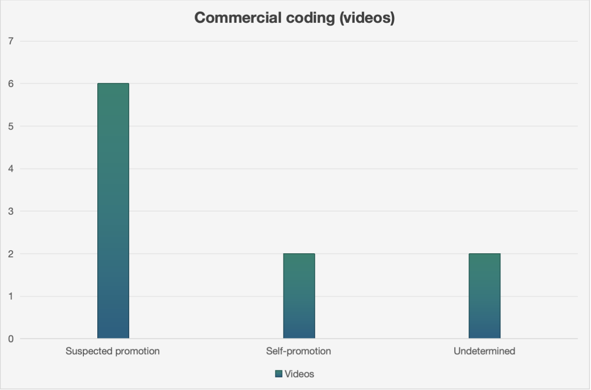
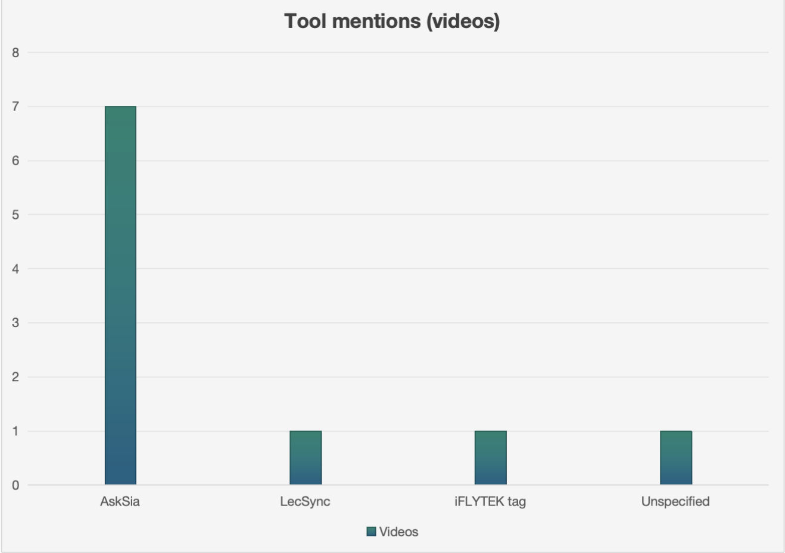

Week 4 · Collecting and Coding Our Data
A summary of the dataset
The spreadsheet contains ten candidate videos from Douyin. These two charts summarise how the videos were classified and which tools appeared in the available material.


My reflection
Looking at the chart, I recognised something I'd noticed while scrolling through Douyin: a lot of the videos I came across were trying to sell a translation app. Six of the ten videos were labelled as suspected promotion and two as self-promotion, although I couldn't confirm whether any were paid ads. Some videos did explain study methods and how to use the tools, and I found those more relevant to our question. An app recommendation alone told me very little about how a student actually used it.
These apps do seem useful, especially when a reading is full of unfamiliar words. I can also imagine getting used to translating everything before trying to read it myself. That made me wonder what we mean by “help” in our research question. Finishing a reading faster and becoming more confident reading English are two things I'd want to look at separately. The workshop also made me think about whose experiences were ending up in our spreadsheet. With so much promotional content in my results, I might be learning more about how apps are sold to students than how students feel after using them. I'd like to find more accounts of what worked, what didn't, and when students chose to manage without the app.